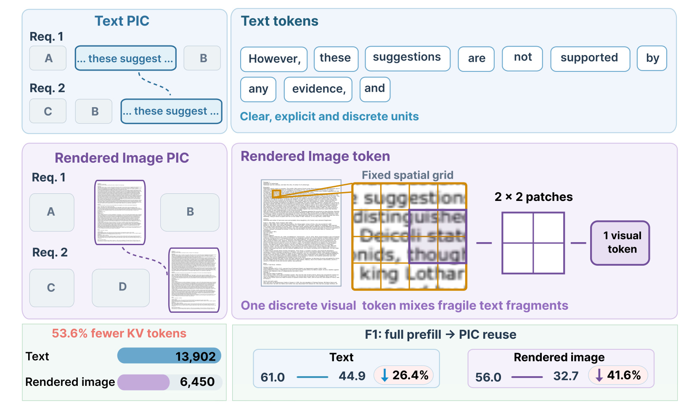
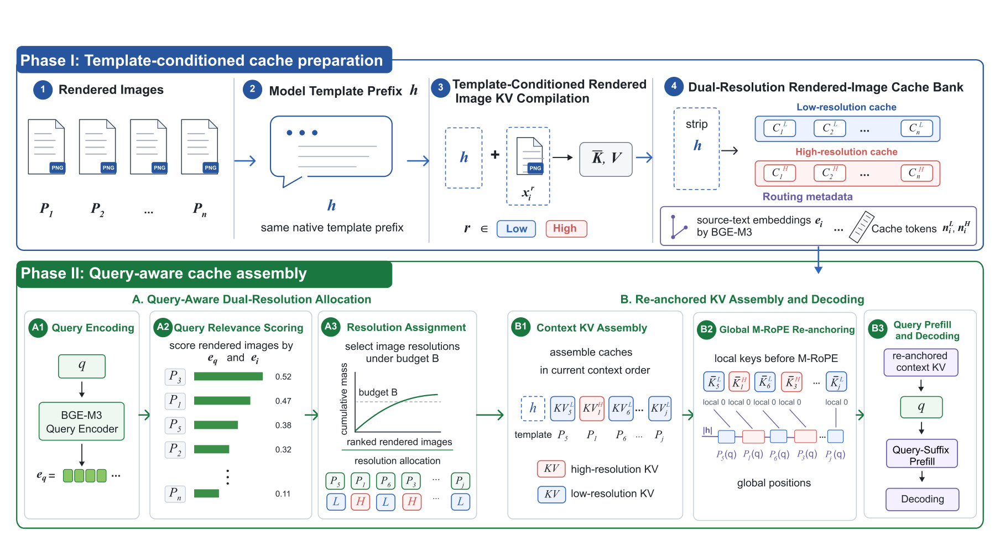
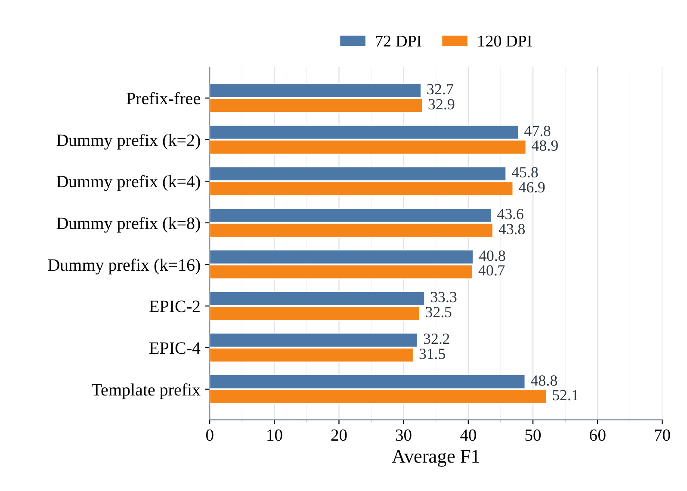
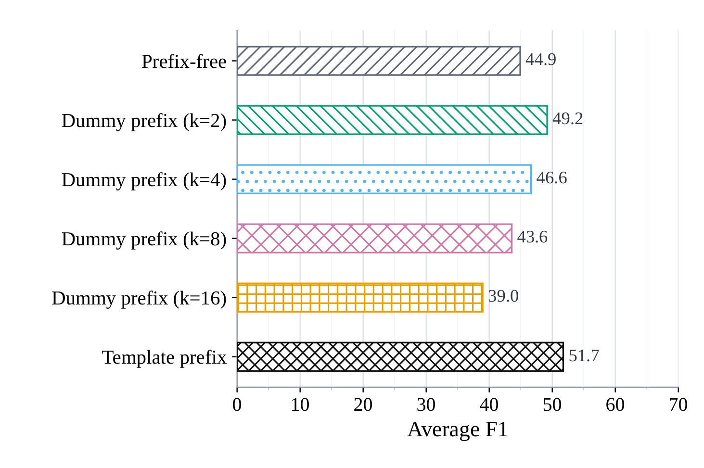
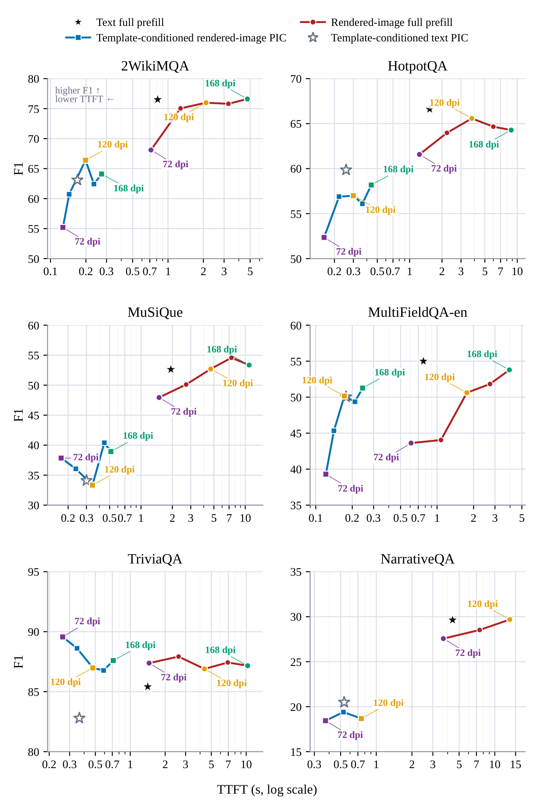
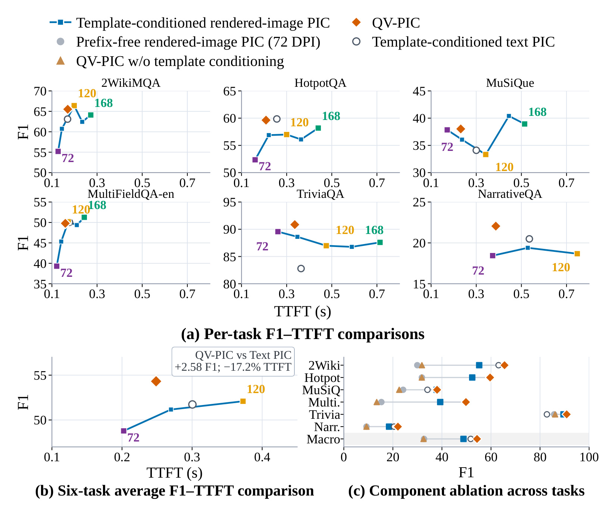
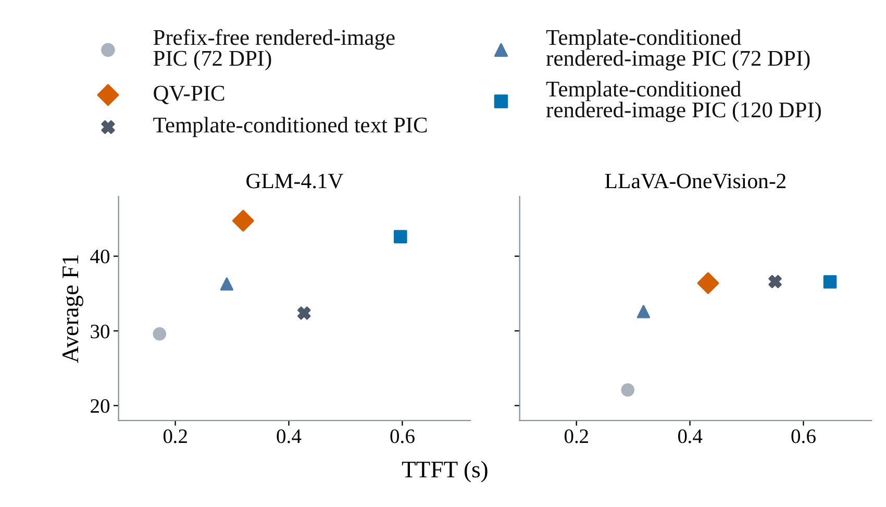

QV-PIC：面向高效 RAG 服务的查询感知视觉位置无关缓存
QV-PIC 研究的是一个很具体的服务系统问题：同一批长文档块被不同 RAG 请求反复检索时，怎样复用已经计算过的 KV cache，同时避免长文本 cache 的传输和装配成本。论文由浙江大学 Yilin Liu、Wangze Ni、Jianxin Yan、Jinfei Liu 等作者完成，合作机构包括北京师范大学-香港浸会大学、Microsoft、中山大学和同济大学；原文发表于 2026 年 8 月 12 日，可从 arXiv:2608.12121 进入。论文首页和 arXiv 元数据中未核验到独立代码或项目仓库，因此下面只讨论论文能够直接支持的方法与实验结论。
把文本块渲染成图像虽然能够显著减少视觉 token，却会让位置无关缓存相对完整 prefill 的质量下降比文本 PIC 更严重：独立编译带来上下文条件错配，视觉压缩又会丢失字符、数字、标点和局部布局中的细粒度答案证据。已有选择性重计算主要修复前一种错配，不但增加在线计算，也无法恢复编码前已经消失的文字细节。
1. 背景和问题
1.1 从重复 prefill 到位置无关缓存
RAG 在每个请求中把检索到的外部文档与查询拼接，再送入语言模型做 prefill。长文档问答里，同一个文档块可能服务许多查询，但它在不同请求中的前缀、顺序和绝对位置都会变化。普通 prefix cache 只能复用完全相同的固定前缀；即使使用树形前缀索引，动态检索改变块顺序后，也很难命中同一条缓存路径。Position-Independent Caching（PIC）换了一个视角：每个块先独立编译为可复用 KV，在线再按当前检索顺序连接，并重新处理位置。它消除了上下文侧的重复完整 prefill，却没有让表示本身变短。文本 token 越多，需要存储、传输和实例化的 K/V 也越多，KV I/O 会逐渐成为时延瓶颈。
视觉文本压缩提供了互补方向：把一页或一个块渲染成图像，VLM 的一个 visual token 可以聚合多个字符单元。Glyph 等模型证明，经过针对渲染文本的训练后，这种表示在完整 prefill 下可以用更少 token 保持较强的长上下文理解能力。于是很自然会想到：既然图像 token 少，就把渲染图像也独立编译成 PIC cache，在线直接拼接。但“完整 prefill 时读得懂图像”不等于“独立编译后仍能无损复用”，因为前者让所有图像、模板和查询共同进入一次注意力计算，后者则把每个块的隐藏状态冻结在孤立的编译环境中。
1.2 视觉表示的压缩收益与复用损伤

Figure 1 把这个矛盾拆成三层。上半部说明文本 token 是明确、离散的符号，而渲染图像经过固定网格切分后，一个视觉 patch 会混合若干脆弱的文字片段；字符边界、数字位数、标点和局部排列不再天然对应独立 token。左下角显示相同内容从 13,902 个文本 KV token 压到 6,450 个视觉 KV token，减少 53.6%，这正是视觉 PIC 的系统吸引力。右下角却显示完整 prefill 到 PIC 复用的 F1：文本从 61.0 降到 44.9，下降 26.4%；渲染图像从 56.0 降到 32.7，下降 41.6%。因此问题不是视觉输入绝对质量一定更差，而是它对“独立编译后再组合”更加敏感。视觉压缩提前丢掉了可恢复空间，缓存上下文错配又进一步放大误差，两类损伤叠加后，token 节省没有自动转化为可用的质量-时延优势。
论文把失败拆成两个相互关联、但不能用同一手段解决的挑战。第一是 compilation-context mismatch：完整请求中图像位于模型原生聊天模板之后，独立 cache 若在无前缀环境编译，首 token 的注意力状态、输入格式条件和完整请求并不一致。任意 dummy prefix 虽能吸收一部分注意力 sink，但 cache 状态会依赖占位 token 的身份与长度，缺少稳定语义。第二是 fine-grained evidence loss：低 DPI 能减少视觉 token，却可能让答案所在的名字、数字、标点或表格位置模糊；在线对已经编译的 KV 做少量重算，并不能重新创造视觉编码器从未保留下来的信息。
1.3 为什么现有修复不足
文本 PIC 的 Cache-Craft、EPIC、TurboRAG 等路线主要围绕 cache linking 后的上下文状态修复、leading token 重计算或 RoPE 位置处理展开。它们对文本有效，是因为原始字符仍由离散 token 保留；重新计算某些状态还有机会恢复跨块依赖。视觉 PIC 的难点更早发生在表示入口：若 72 DPI 图像已经把细字压缩成模糊 patch，再精细的 KV 修复也只能处理现有视觉特征。反过来，把所有块统一提升到高 DPI 虽增加细节，却会扩大 visual token、KV 传输和 TTFT，抵消使用图像的初衷。
QV-PIC 的问题定义因此不是单纯“提高视觉问答 F1”，而是要求在线路径同时满足三点：保持所有检索块的全局覆盖；仅对与当前查询相关的局部恢复高分辨率证据；不在请求到来后重新渲染、重新做视觉编码或重新 prefill 整个上下文。它把两个失败源分别映射到两个机制：原生模板条件编译负责稳定独立 cache 的上下文基础，查询感知双分辨率分配负责在固定预算内恢复细粒度证据。只有二者配合，视觉表示的短序列优势才可能真正落到 RAG 服务时延上。
2. 方法
2.1 两阶段框架：离线双版本缓存，在线按查询装配
给定查询 $q$，检索器产生按当前请求顺序排列的文档块 $C(q)=(c_1,\ldots,c_n)$。QV-PIC 不改变检索结果，也不按相关性重新排序上下文；相关性只决定每个块采用低分辨率还是高分辨率。离线阶段把每个 $c_i$ 分别渲染成 low/high 两个版本，在模型原生聊天模板条件下独立编译 KV，并保存源文本的 BGE-M3 embedding、两种视觉 token 数量和源顺序元数据。在线阶段编码一次查询，计算它与各块源文本 embedding 的相关性，从中选择有限数量升级为高分辨率，随后按 RAG 原始上下文顺序装配 cache、重锚定 M-RoPE 位置，只对查询后缀做 prefill 和生成。

Figure 2 的上半部是 Phase I。步骤 1-3 依次把文档页渲染成两种 DPI、加入同一个 native template prefix $h$、编译出未施加最终全局位置旋转的 $\bar K,V$；步骤 4 去掉 $h$ 对应的 KV，只留下受模板条件影响的图像 KV，并形成每页两个版本的 cache bank。源文本 embedding 和 $n_i^L,n_i^H$ 不参与 VLM prefill，而是给在线路由使用。下半部的 Phase II 分成 A、B 两条连续链：A1-A3 对查询编码、打分并在预算 $B$ 下决定 H/L；B1 仍按当前请求的 $P_5,P_1,P_6,\ldots$ 顺序拼接，而不是按得分排序；B2 把独立 cache 的局部位置 0 重映射到全局位置；B3 才接上查询 KV，执行 query-suffix prefill 与解码。关键节省来自所有图像渲染、视觉编码和上下文 KV 编译都留在离线，在线新增工作只有一次轻量文本 embedding、相似度排序和 cache 选择。
2.2 模型原生模板条件编译与 M-RoPE 重锚定
完整 VLM 请求并不是从任意文档 token 开始，而是先经过模型训练时使用的聊天模板。prefix-free 编译移除了这层请求不变条件；dummy prefix 又用模型未必学过的占位序列替代它。QV-PIC 使用模型自己的 template prefix $h$ 作为可丢弃条件，对分辨率为 $r$ 的第 $i$ 张渲染图像定义：
符号解释：$M$ 是 VLM，$x_i^r=\operatorname{Render}(c_i;r)$ 是块 $c_i$ 在分辨率 $r$ 下的图像，$\operatorname{KV}_M$ 表示模型 prefill 后得到的 KV，$\operatorname{Strip}_h$ 只删除前缀 $h$ 的 KV 条目。虽然 $h$ 的条目不存进每块 cache，后续图像条目是在这个原生输入格式下计算的，因此模板的条件效应被保留。在线只需要加入一份共享的 $C_h=\operatorname{KV}_M(h)$，避免每块重复存模板。独立编译时还不能把 key 固定到最终绝对位置，因为同一块在不同请求中的顺序不同；QV-PIC 因而存储 M-RoPE 旋转前的 key，待顺序与分辨率确定后再按 $P_i(q)$ 变换：
符号解释：$\bar K_{\ell,i}^{r}$ 是第 $\ell$ 层、图像 $i$、分辨率 $r$ 的未旋转 key，$P_i(q)$ 是它在本次请求中的位置，$R_\ell$ 是模型原生 M-RoPE 算子；value 不依赖位置，直接按当前上下文顺序拼接。这一式只修复“放在哪里”，而式 (1) 修复“在什么输入格式条件下编译”，二者不能互换。模板条件并不恢复丢失的像素细节，M-RoPE 也不重建跨块注意力；它们建立的是一个更稳定、位置可重用的 cache 基础。在此基础上，第 $i$ 个渲染图像的离线缓存库保存两个分辨率选择：
2.3 累计相关性驱动的双分辨率分配与在线成本
符号解释：$C_i^L$ 与 $C_i^H$ 分别是低分辨率、高分辨率图像的模板条件 KV。每个请求必须且只激活其中一个版本，所以低分辨率提供全局覆盖，高分辨率只增加被提升块的细节，而不是额外叠一份上下文。路由无需在线运行 OCR 或视觉模型，而是使用冻结的 BGE-M3 文本编码器 $E(\cdot)$：源块文本离线编码，查询在线编码，二者做 $L_2$ 归一化：
符号解释：$e_i$ 是源块 $c_i$ 的单位向量，$e_q$ 是查询的单位向量。使用源文本而非低清图像做路由，意味着选择信号不会再次受到视觉细节丢失影响；代价是系统必须在 cache bank 中维护文本 embedding，并假设通用语义相似度能代理答案证据的重要性。归一化后，内积就是余弦相似度；累计分配只使用其非负部分：
符号解释：$\tilde s_i$ 是余弦相关性，$s_i$ 把负相关截为零。排序仍按 $\tilde s_i$ 从高到低得到 $\pi(q)$，但累计质量只统计正分，以免负相关块抵消真正相关证据。若所有分数都非正，系统选择得分最高的一个块作为确定性 fallback，保证至少有一个高分辨率候选。QV-PIC 不采用固定 top-$k$，而是寻找达到累计正相关质量阈值 $\alpha$ 的最小前缀，并用硬预算 $B$ 截断：
符号解释：$\pi_j$ 是第 $j$ 个高相关块，$n$ 是检索块数，$\alpha$ 控制希望由高分辨率覆盖的相关性质量，$B$ 控制最坏情况下的高分辨率数量。论文实验使用 $\alpha=0.65,B=4$。查询很集中时，少量块即可达到阈值；相关性分散时会提升更多块，但最多四个。这个规则比固定 top-$k$ 更适应问题证据的集中程度，也比全体 120 DPI 有明确的成本上界。得到 $k^\star$ 后，系统把排名前缀转成逐图分辨率：
符号解释：$S(q)$ 是升级集合，$r_i(q)$ 是图像 $i$ 的激活分辨率。相关性排序不改变 cache 拼接顺序；它只选择版本。这个限制很重要，因为多跳问答往往依赖原检索上下文的组合结构，若把高相关排序误用成上下文重排，就会把分辨率路由与检索策略混为一谈。激活后的视觉前缀长度因而能分解为低清基线与被提升块的增量：
符号解释：$n_i^L,n_i^H$ 是第 $i$ 张图像两种版本的 token 数，$N(q)$ 是本次请求真正装配的视觉 KV 前缀长度。第一项保证所有块都有低清覆盖；第二项只为 $S(q)$ 中的块支付高低分辨率 token 差额。这个式子展示了效率来源不是删掉“无关块”，而是把无关块降到便宜表示，因此仍保留潜在的跨块全局线索。与节省的 KV 长度相对应，在线路由时间由查询编码、相似度计算和排序组成：
符号解释：$T_E(q)$ 是一次查询 embedding 时间，$d$ 是 embedding 维数，$O(nd)$ 是与 $n$ 个源块计算相似度，$O(n\log n)$ 是排序。渲染、视觉编码与图像 KV 编译不在该式中，因为它们全部离线完成。工程上真正需要比较的不是路由是否“免费”，而是这三项新增在线开销是否小于减少的 KV 传输、materialization 与 query prefill 时间；论文的 TTFT 统计把 BGE-M3 编码和分配开销纳入 QV-PIC，因此后面的时延结果至少在测量口径上没有隐藏路由成本。
3. 实验结果
3.1 设置、数据与测量口径
作者在统一的 Hugging Face-PyTorch 推理框架中实现所有方法，服务器配置为 8 张 NVIDIA A800 80 GB。Q1-Q3 以 Glyph 9B 为主模型：它经过渲染长文本持续预训练和 OCR-aware SFT/RL，可尽量把实验焦点放在 cache 编译与分辨率分配，而不是基础识字能力。Q4 加入 GLM-4.1V-9B-Thinking 和 LLaVA-OneVision-2-8B-Instruct；前者与 Glyph 有模型族关系，后者采用不同视觉编码器、语言 backbone 和训练配方，分别作为 related-family 与 cross-family probe。
数据覆盖 LongBench 六个长上下文 QA 任务，共 1,150 个样本：2WikiMQA、HotpotQA、MuSiQue 测多文档多跳证据聚合，MultiFieldQA-en 与 NarrativeQA 测长单文档定位或整体理解，TriviaQA 偏事实问答。除 MultiFieldQA-en 为 150 个样本外，其余每项 200 个；先在任务内算官方 token-overlap F1，再对六任务等权平均。TTFT 每例测三次，从在线请求前 CUDA 同步到首 token logits：完整 prefill 包含视觉编码、全文 prefill 和首 token；PIC 包含 CPU-to-GPU KV 传输与 materialization、cache composition、全局位置重锚定、查询后缀 prefill 和首 token；QV-PIC 还显式包含 BGE-M3 查询编码、打分、排序与分辨率分配。
3.2 Q1：模板条件编译是否真正修复 cache 基础

Figure 3 的关键不是“120 DPI 总比 72 DPI 好”，而是不同编译条件是否让分辨率细节有机会被利用。prefix-free 在 72/120 DPI 仅为 32.7/32.9 F1，提高 DPI 几乎没有作用；EPIC-2/4 也停在 31.5-33.3，说明对已经拼接的视觉 cache 重算少量 leading token 不能修复表示入口。dummy prefix $k=2$ 突然升到 47.8/48.9，证明离线提供某种前缀条件很重要，但 $k$ 从 2 增到 16 时成绩持续退化到约 40.8/40.7，显示结果依赖任意长度。native template prefix 在 72 DPI 达 48.8、120 DPI 达 52.1，并比长度同为四 token 的 dummy prefix 高 3.0 与 5.2 点。由此可以把收益定位到模型学过的输入接口条件，而非只是在块前垫几个 token；120 DPI 只有在 cache 基础稳定后才转化为明显 F1。

Figure 4 把相同判断放到文本表示上。prefix-free 文本 PIC 为 44.9，dummy prefix $k=2$ 提高到 49.2，但长度从 4、8 到 16 时依次为 46.6、43.6、39.0；原生模板前缀达到 51.7，是全部设置最高。这里最有说服力的控制是 $k=4$：它与原生模板长度相同，却低 5.1 F1，排除了“只要前缀长度等于模板即可”的解释。结合 Figure 3，模板条件编译在视觉和文本两种表示上方向一致；视觉分支的额外价值在于，它把 120 DPI 的模板条件 PIC 提到 52.1，甚至比文本模板条件 PIC 高 0.4 点。需要注意，这一结论是六任务平均值，不等于每个任务都实现逐项领先；它证明的是一个可靠编译基线，而不是所有上下文错配已经消失。
3.3 Q2：统一提高 DPI 为什么不是稳定解法

Figure 5 将 72、96、120、144、168 DPI 的图像点按顺序连接，横轴 TTFT 使用对数尺度；NarrativeQA 因计算预算只测到 120 DPI。六个面板共同呈现一种不对称：DPI 增大使 visual token 与 KV 体积上升，因此 TTFT 基本沿横轴向右移动；F1 却并不单调。2WikiMQA 的完整 prefill 随 DPI 先升后趋平，模板条件 PIC 在 120 DPI 后也会回落；HotpotQA 的图像完整 prefill和 PIC 都有局部峰值；MuSiQue、TriviaQA 的部分高 DPI 点反而低于中等 DPI；MultiFieldQA-en 与 NarrativeQA 的方向又不完全相同。平均上，模板条件视觉 PIC 从 72 DPI 的 48.8 提高到 120 DPI 的 52.1，但“更多像素”不是稳定的逐任务质量保证。图中图像完整 prefill 通常比视觉 PIC 慢约一个数量级，也说明 cache 复用本身仍极具时延价值。Q2 的结论应表述为：120 DPI 是合理的高分辨率候选，而不是把所有块统一升到 120/168 DPI 的理由；应让查询选择在哪些块上购买这部分细节。
3.4 Q3：双分辨率与模板条件能否形成联合优势

Figure 6(a) 用六个任务比较 72/120/168 DPI 模板条件视觉 PIC、文本 PIC、prefix-free 视觉 PIC、缺模板的 QV-PIC 与完整 QV-PIC。橙色菱形在 HotpotQA、MuSiQue、TriviaQA、NarrativeQA 上相对统一 120 DPI 同时向左或向上移动；在 2WikiMQA 上以相近时延获得更高 F1，在 MultiFieldQA-en 上以更低时延保持接近质量。图 (b) 的宏平均给出最核心数字：QV-PIC 为 54.3 F1，相对模板条件文本 PIC 的 51.7 高 2.58 点，TTFT 同时低 17.2%；相对完整 prefill，论文报告 TTFT 下降 83.8%。图 (c) 则说明为何不是任一组件单独完成这些收益：prefix-free 72 DPI 为 32.7，只有双分辨率但无模板条件为 32.5，几乎没有改善；模板条件 72 DPI 为 48.8；两者合并才到 54.3，并在六任务上都获得增益。也就是说，路由只能在“可用的两档 cache”之间分配资源，若 cache 状态本身失配，选择更清晰的块也救不了系统。
这个消融还澄清了 QV-PIC 的质量-时延来源。模板条件是离线修复，不增加每次请求的图像重计算；双分辨率则改变活动 KV 序列长度，让与查询无关的块继续用 72 DPI、相关块提升到 120 DPI。它并非把所有任务推到各自最高绝对 F1：例如某些完整 prefill 或高 DPI 点仍更高；它追求的是六任务平均的 Pareto 改善。论文把 BGE-M3 路由时间计入 TTFT，也让 17.2% 的相对文本 PIC 优势更接近端到端在线口径。不过实验没有给出网络化多租户 serving、cache miss、cache eviction 或并发调度下的尾时延，因此 83.8% 不能直接外推为生产集群的 P99 收益。
3.5 Q4：收益能否越过 Glyph 的专门训练

Figure 7 只报告两种通用 VLM 的六任务平均 F1-TTFT，不能据此声称 backbone-independent，但它提供了有层次的迁移证据。GLM-4.1V 面板中，prefix-free 72 DPI 点质量最低；模板条件 72/120 DPI 逐步上升，QV-PIC 的橙色菱形取得最高平均 F1，同时 TTFT 低于统一 120 DPI 视觉 PIC 和文本 PIC。LLaVA-OneVision-2 的结果更克制：QV-PIC 相对 prefix-free 与模板条件 72 DPI 显著提高，平均 F1 接近统一 120 DPI 视觉 PIC 和文本 PIC 的最佳水平，但没有明显超过它们；优势主要体现在更低 TTFT。两种模型的方向一致，说明“原生模板条件 + 有预算的分辨率升级”并非完全依赖 Glyph 的 rendered-text adaptation；收益幅度却随 OCR 能力、视觉 token 化和语言 backbone 变化。论文也明确把这两者称为 conservative transfer probes，而不是完整普适性证明。
从证据链看，Q1 先验证 cache 编译基础，Q2 证明统一 DPI 存在不稳定质量与稳定成本增长，Q3 证明查询分配和模板条件互补，Q4 再检查跨模型方向。这比只给一张最终主结果表更能定位因果环节。但仍缺少几类关键实验：$\alpha=0.65$ 与 $B=4$ 的系统敏感性曲线、BGE-M3 路由错误案例、不同检索块数量下的 cache 内存与传输量、真实在线负载的吞吐/P95/P99，以及图像预编译和双版本存储的离线成本。这些空白决定了 QV-PIC 目前更像经过充分离线 QA 验证的 serving design，而不是已经完成生产闭环的系统。
4. 总结
4.1 我的判断与工程含义
QV-PIC 最扎实的贡献不是“图像替代文本”，而是把视觉 PIC 的质量问题拆成 cache 条件错配 与 细粒度证据损失，并为二者安排不同时间尺度的修复：模板条件编译在离线建立可靠状态，查询感知双分辨率在在线分配有限细节预算。54.3 平均 F1、相对文本 PIC 的 +2.58 F1/-17.2% TTFT、相对完整 prefill 的 -83.8% TTFT，以及四路组件消融共同支撑这一叙事。对 RAG 服务而言，它提供了一种“不删除上下文、只改变每块表示成本”的中间方案：比 uniform high resolution 更节省，也比只保留 top-$k$ 块更谨慎。
落地时可以把 cache bank 看作带两档质量的内容资产：离线按模型版本、模板版本、渲染参数和文档版本建立 key，在线路由只返回 L/H 选择与当前顺序。监控不应只看平均 TTFT，还应分解 query embedding、KV 传输、M-RoPE 重锚定、query prefill、cache hit 和高分辨率提升数。若业务查询强依赖精确数字、SKU、日期或表格单元格，应额外记录证据块是否被升档；一旦路由漏选，低清 cache 可能让生成模型在“上下文存在但读不清”的状态下给出自信答案。
4.2 局限、复现重点与后续跟进
主要局限至少有四点。第一，六个任务全部来自 LongBench QA，缺少开放域实时检索、混合图文页面和领域文档，不能代表所有 RAG 负载。第二，主实验依赖经过渲染文本适配的 Glyph；两种通用 VLM 虽验证方向，但 LLaVA 上主要是近似最佳质量而非绝对领先。第三，固定 $\alpha=0.65,B=4$ 没有系统扫描，难以判断阈值是否对块数、问题类型和证据分散程度敏感。第四，双版本 cache 会增加离线视觉编码、存储与失效管理成本，论文重点测在线 TTFT，没有给出全生命周期成本。第五，BGE-M3 的语义相似度不保证识别字符级答案证据，尤其可能漏掉数字、否定词和跨块组合线索。第六，实验运行在 8×A800 的统一框架上，尚未覆盖多租户并发、CPU-GPU 拥塞、远程 KV 存储和 P99 尾时延。
后续最值得做三组验证。其一，复现 Figure 6 的四路消融，并对 $\alpha$、$B$、检索块数和 72/120 DPI 组合做二维扫描，画出 F1、TTFT、活动 KV token 和双版本存储的 Pareto 面；这能判断论文的固定配置是否只是当前数据集甜点。其二，建立路由错误审计，把答案证据块、BGE-M3 排名、实际提升集合和生成错误对齐，单独统计数字、实体、否定与多跳问题；这能检验相似度路由是否真的恢复“细粒度证据”。其三，在真实 serving 栈加入 cache hit/miss、淘汰、传输、并发批处理和模板升级，比较平均值与 P95/P99；只有此时才能确认论文报告的 TTFT 优势能否穿过生产系统噪声。还应持续关注代码是否开放，以及后续版本是否补充预算敏感性、存储成本和更多视觉 backbone。